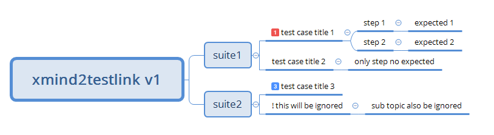
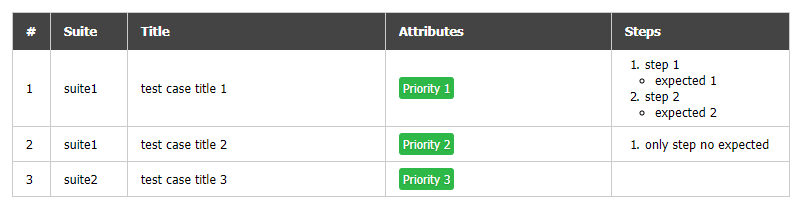
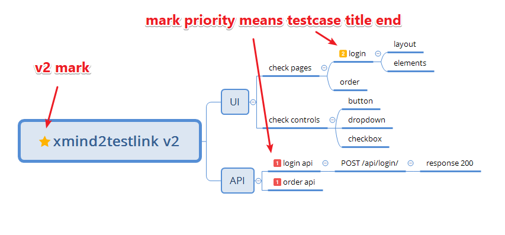
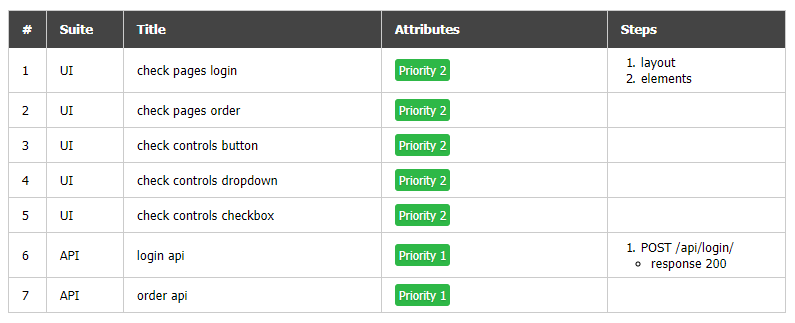
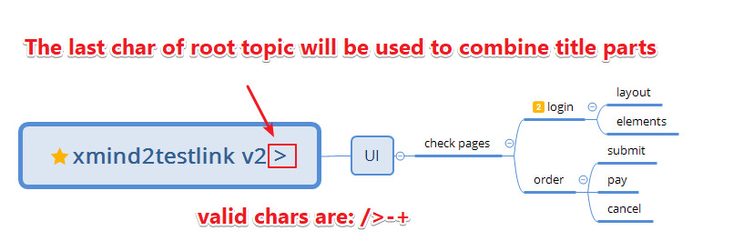
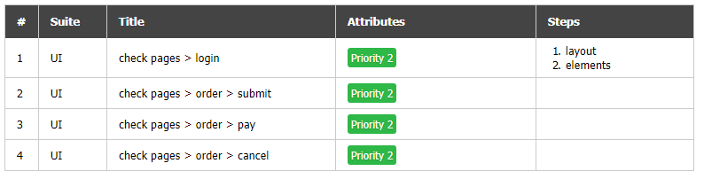

Now xmind2testlink has been upgraded to v2, it supports 2 kinds of conversion.
For old users (xmind2testlink v1), your xmind looks like below structure.

The output:

Generally to say:
Your input xmind looks like this:

The output:

More about v2:
Mark root topic with a star marker, this means v2 xmind file. (no matter what color of star maker)
First sub topic => it is still converted to suite
Test case title will be combined by sub topics, until:
By default, the title parts are connected by blank space, you can define the connector by last char of root topic, like this.

Then the output will be changed to:

Note: only valid chars can be used as a connector.
Notes for a test suite => details in TestLink.
Notes for a test case => summary in TestLink.
Comments for a test case => preconditions in TestLink.
Priority maker for a test case => importance in TestLink.
Sub topics for a test case will be treated as test steps.
Use ! to ignore any topic that you don't want to convert.
Root topic will not be converted, it is target suite node in TestLink.
Free topic and notes will not be converted.
Only the first sheet in xmind will be converted.
Download the sample xmind files: